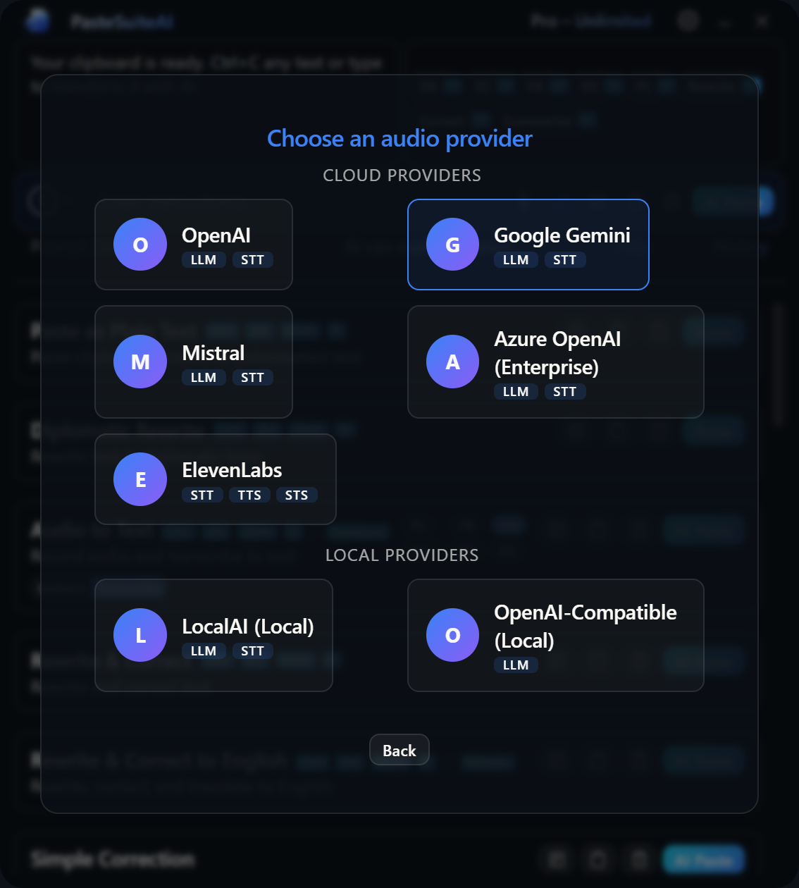

Getting Started
This guide walks you through installing PasteSuiteAI and configuring your first AI provider so you can start using text transformations, speech transcription, and smart actions right away.
Installation
PasteSuiteAI runs on Windows only. To install:
- Download the latest installer (
.exe) from the PasteSuiteAI website. - Run the installer. No administrator rights are required for a per-user install.
- Launch PasteSuiteAI from the Start Menu or desktop shortcut. On first launch it may take a moment to start, then the main window appears.
Setup Wizard
On the very first launch, if no connections are configured, the Setup Wizard appears automatically. It guides you through connecting to an AI provider. You can dismiss it at any point and configure connections later from Settings → Connections.

Step 1: Welcome
The welcome screen introduces the wizard. You have two choices:
- Yes, set up — advances to provider selection.
- No thanks — dismisses the wizard. It will not reappear automatically. You can relaunch it any time from Settings → Connections.
Step 2: Provider Selection
Click a provider card to select it and advance to configuration. Providers are grouped into two categories:
| Category | Providers | When to use |
|---|---|---|
| Cloud | OpenAI, Anthropic, Azure OpenAI, Google AI, and others | Best quality and speed. Requires an API key and internet access. Usage is billed by the provider. |
| Local | Ollama, LM Studio, and any OpenAI-compatible local server | Runs on your own hardware. No API key needed, no usage costs, no data leaves your machine. |
Each card shows the provider name and the capabilities it supports (for example llm, stt, vision).
Step 3: Configuration
Enter the connection details for the selected provider. The fields shown depend on the provider:
| Field | When shown | Description |
|---|---|---|
| Endpoint URL | Providers that require a custom endpoint (local providers, Azure OpenAI) | The base URL for the provider API. Pre-filled with the provider default where applicable. |
| API Key | Providers that require authentication | Your secret API key. Input is masked. Stored in your OS secure credential store — never written to disk in plain text. A link to the provider's key management page is shown when available. |
| Model | Always | A curated dropdown of supported models for the selected provider. The recommended model is pre-selected. Choose Custom model… at the bottom of the list to type a model identifier that is not in the curated list. |
When you select Custom model…, a text input replaces the dropdown. Click Back to curated list to restore the dropdown and reset to the recommended model.
Step 4: Test Result
Click Test & Save. The wizard creates the connection, saves your API key, and sends a short test message to the provider. A spinner is shown while the test is in progress.
On success:
- A checkmark is shown with a confirmation message.
- Add Another — resets the form and returns to provider selection to configure a second connection.
- No Thanks — Done — moves to the next step (audio upsell or defaults).
On failure:
- An error message describes what went wrong. The connection is retained so you can save it anyway.
- Try Again — deletes the failed connection and returns you to step 3 to correct the details.
- Save Anyway — saves the connection despite the failed test. Use this when you know the failure was transient (for example a temporary outage or rate limit).
- Skip — deletes the pending connection and dismisses the wizard entirely.
Step 5: Audio Upsell
If you do not yet have a speech-to-text connection configured and audio-capable providers are available, the wizard offers to add one before closing.
- Yes, add audio — switches to audio mode and returns to provider selection, showing only STT-capable providers.
- No, skip audio — proceeds to defaults or closes the wizard.
This step is skipped when you already have an STT connection or no audio-capable providers are installed.
Step 6: Default Assignments
If you have configured more than one connection for the same capability (LLM, Vision, or STT), the wizard asks you to choose a default for each group.
Click any connection row to set it as the default for that capability. The star icon fills to indicate the active default. Defaults can be changed at any time from Settings → Connections or from the inline connection selector in the main window.
Click Done to close the wizard. This step is skipped entirely when each capability has at most one connection.
Interactive Elements
| Element | Type | Description |
|---|---|---|
| Yes, set up | Button (primary) | Advances from step 1 to provider selection. |
| No thanks | Button (secondary) | Dismisses the wizard and marks it as seen. The wizard will not reappear automatically. |
| Provider card | Clickable card | Selects the provider and advances to the configuration step. |
| Back | Button (secondary) | Returns to the previous step. On the provider grid after looping, goes to the result screen rather than step 1. |
| Endpoint URL | Text input | Custom API endpoint URL. Shown only for providers that require it. |
| API Key | Password input | Provider API key. Masked on input. Stored in the OS Credential Manager. |
| Model dropdown | Select | Curated model list for the provider. Selecting the last option switches to custom text input. |
| Custom model input | Text input | Free-form model identifier. Appears when Custom model is selected from the dropdown. |
| Back to curated list | Link | Dismisses the custom model input and restores the dropdown with the recommended model. |
| Test & Save | Button (primary, with spinner) | Creates the connection, saves the API key, and runs a live connection test. |
| Add Another | Button (primary) | On success: resets the form and returns to provider selection. |
| No Thanks — Done | Button (secondary) | On success: advances to audio upsell or defaults depending on configuration. |
| Try Again | Button (primary) | On failure: deletes the failed connection and returns to the configuration step. |
| Save Anyway | Button (secondary) | On failure: saves the connection without a passing test. |
| Skip | Button (secondary) | On failure: deletes the pending connection and closes the wizard. |
| Yes, add audio | Button (primary) | Starts audio mode: returns to provider selection showing only STT-capable providers. |
| No, skip audio | Button (secondary) | Skips audio setup and proceeds to defaults or closes the wizard. |
| Default capability row | Clickable row | Sets the clicked connection as the default for that capability group. |
| Done | Button (primary) | Closes the wizard from the defaults step. |
After Setup
Once the wizard closes you will see the main panel. It shows your current text, quick prompt buttons, the prompt input, and the list of available actions. For a full description of every element see Main Window.
To run your first action: select some text, then click AI Paste on any action card. The transformed text is pasted into the previously active window.
For more on configuring and using actions, see Actions.
Re-running the Wizard
You can reopen the Setup Wizard at any time. Click the settings gear icon in the title bar, navigate to the Connections tab, and click Relaunch Wizard. To add only an STT provider, click Add Audio Connection instead — this launches the wizard directly in audio mode, showing only speech-to-text capable providers.